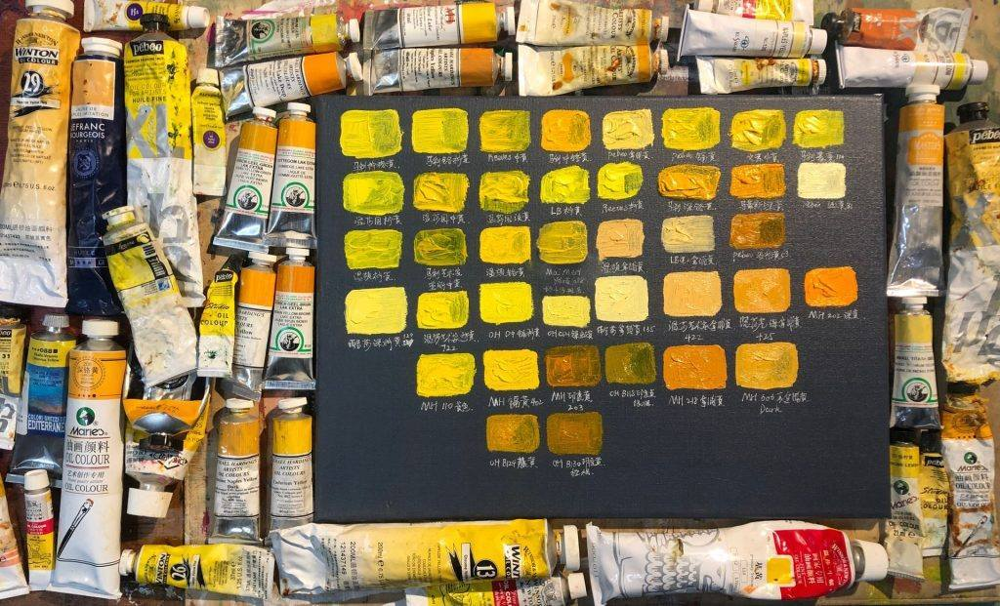
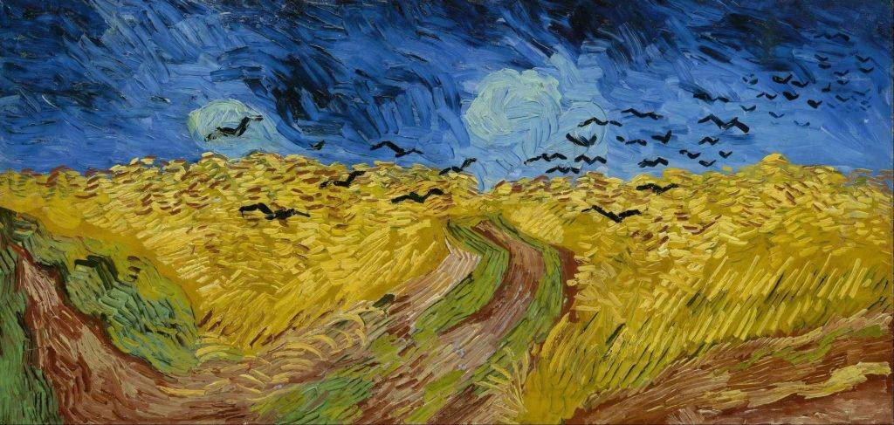
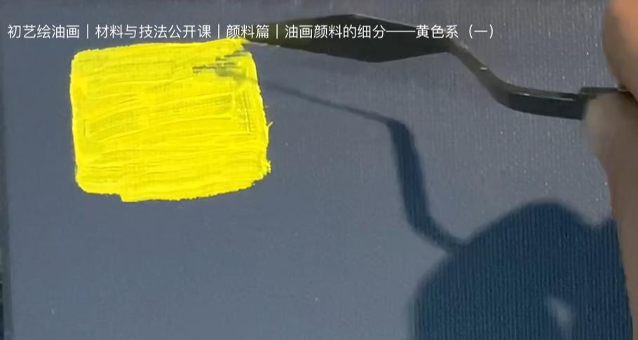
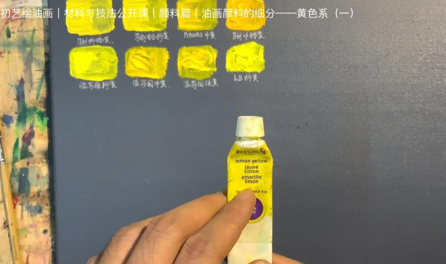
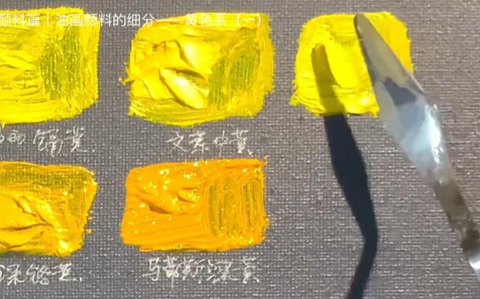

公开课
【基础黄色】品牌与名称——黄色系（一）
在绘画的世界里，色彩是艺术表达的核心，而选择合适的颜料则是提升作品表现力的关键。今天，我将带大家一起深入探讨油画中最常见的黄色系颜料，通过多个品牌的对比，了解不同颜色的特性及其在创作中的应用。
视频链接：http://xhslink.com/a/dsVodrrjUtSW

1. 从柠檬黄开始——基础与应用
柠檬黄是一种非常常用的油画颜色。它通常由铬酸铅或铬酸钡制成，具有一定的毒性，因此在使用时需要特别注意避免误食和吸入粉尘。柠檬黄在1820年之后被广泛应用于绘画领域，著名的后印象派画家梵高也常用这种颜色。

在对比多个品牌时，我们可以看到，国产的玛丽柠檬黄在厚涂时颜色饱满，而薄涂时则呈现出较为灰暗的底色。而温莎品牌的柠檬黄相对较冷，覆盖力较弱，但干燥速度较快，这使得它在某些创作场景下非常实用。

2. 颜色的覆盖力与透明度
不同品牌的黄色在覆盖力和透明度上差异较大。例如，斑点狗品牌的中黄颜色黏性较强，但覆盖力较弱，而贝贝欧的纳普黄则因加入了白色，覆盖力相对较强，适合大面积的铺色。在创作过程中，选择合适的黄色不仅取决于它的明度和色温，还要考虑到其覆盖能力，尤其是在多层次绘画中，颜料的表现尤为重要。

3. 黄色的冷暖变化
黄色系的颜色在冷暖变化上非常明显。柠檬黄属于冷色调，而中黄则稍微偏暖。在实际创作中，冷暖色调的选择可以影响到整个画面的氛围。以温莎的柠檬黄为例，它的色相偏冷，在画面中可以起到提亮作用，而像深隔黄这样的颜色则偏暖，适合用于表现阳光下的暖色调物体。

4. 颜料的调色特性
黄色系颜料的调色特性相对复杂。例如，隔黄由于含有一定的铅，在调色时不能与铅白或含有硫的颜料混合，否则容易发生颜色变黑的情况。因此，在使用黄色系颜料时，艺术家需要根据不同颜色的特性选择合适的调色方法。

5. 总结与展望
在今天的测试中，我们展示了多个品牌的黄色系颜料，并分析了它们在厚涂、薄涂、覆盖力、透明度等方面的表现。黄色作为油画中的三原色之一，用途广泛，是许多艺术家画面中的核心颜色。通过对不同品牌颜料的比较，大家可以更好地了解如何根据不同的创作需求选择合适的颜料。
下一次，我们将继续探索更多的黄色色相及其对应的调色方法，帮助大家在创作中更好地运用色彩。感谢大家的收看与支持，期待在下一期与大家再次相见！